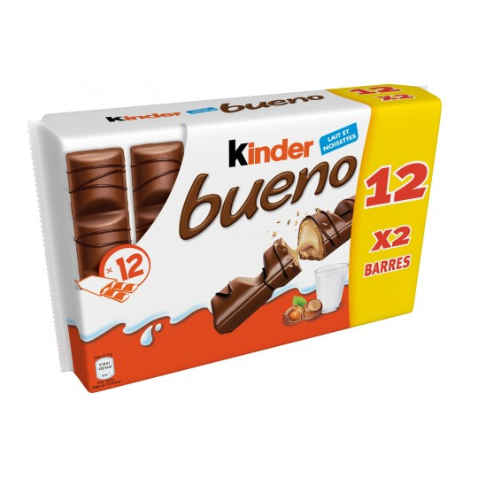

Barres chocolatées Kinder Bueno
KinderChocolats & Bonbons
Crée le 25 Novembre 2019
Poubelles


Packaging


Description
La fécule de maïs est principalement utilisée comme épaississant et liant pour les sauces. La poudre blanche et fine a deux fois le pouvoir épaississant de la farine. Comptez 1 cuillère à soupe de fécule de maïs pour remplacer 2 cuillères à soupe de farine.